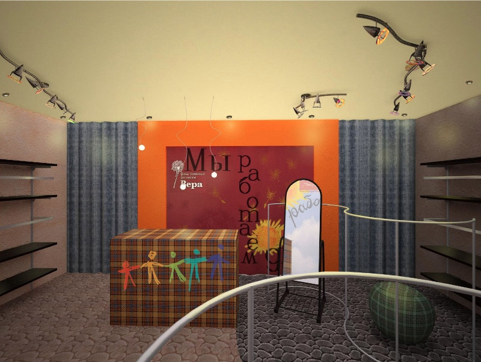

ОТКРЫТИЕ 20-го СЕНТЯБРЯ 2012!
Наш сайт в процессе разработки, но уже сейчас Вы можете помочь
подопечным Благотворительного фонда помощи детям с онкогематологическими заболеваниями «Подари жизнь» и Благотворительного фонда помощи хосписам «Вера»
Достаточно просто освободить свой шкаф от тех вещей, которые Вам
не подошли или Вы точно не будете их больше носить, а выкидывать жалко. Мы постараемся найти покупателя на каждую вещь, принесенную Вами, а деньги передадим в указанные фонды.
Коллектив Благотворительного Бутика
О нас
Каждый день открывая шкаф мы видим, что какие-то вещи висят там уже давно, но они новые и их жалко выкидывать, а отдать некому.
Благотворительный бутик позволит Вам отдать эти вещи в пользу тех, кто сегодня так нуждается в помощи, - подопечным Фондов
"Подари жизнь" и "Вера".
Во всем мире существуют такие благотворительные магазины. В Англии такие магазины встречаются на каждом шагу. Некоторые предлагают взять вещь и оставить любую сумму, другие устанавливают цены, но всех их объединяет одно: одежду в магазин отдают бесплатно, а вырученные средства, за вычетом расходов на содержание и развитие магазина, идут на помощь нуждающимся. У нас в стране тоже стали открываться благотворительные магазины. Их пока еще очень мало, но мы уверены, что это только начало.
Почему "Благотворительный Бутик"? Бутик, потому что мы предлагаем покупателям новые вещи, которые просто кому-то не подошли или после первого выхода остались в шкафу. А благотворительный, потому, что лечение подопечных наших фондов обходится очень дорого, ведь один флакон лекарства может стоить 2-3 тысячи долларов, а значит нам нужно продавать хорошие вещи, чтобы собирать достаточно денег.
Загляните в свой шкаф и Вы убедитесь, что хотя бы одна такая вещь у Вас есть, а значит Благотворительный бутик - это для Вас.

В НАСТОЯЩЕЕ ВРЕМЯ ДАННАЯ СТРАНИЦА НА РЕКОНСТРУКЦИИ
Мы планируем фотографировать переданные нам вещи и давать возможность потенциальным покупателем на них посмотреть, а при желании приобрести прямо на сайте.
Пожертвовать
В Благотворительный бутик можно пожертвовать новую или почти новую ВЗРОСЛУЮ одежду, обувь, аксессуары, которые Вам не подошли или просто стали нерациональной покупкой.
Мы постараемся найти покупателя на каждую вещь, принесенную Вами. Вырученные средства, за вычетом разумных расходов на содержание, будут перечислены благотворительным фондам. Результаты Вашей помощи будут публиковаться здесь же на сайте, а также в отчетах фондов.
Передать вещи очень просто. Вы можете:
- 1. Приехать в наш магазин ул. Большая Черемушкинская, д.1, ТРЦ РИО, U20a, цокольный этаж
- 2. Оставить вещи в помещении Фонда "Подари жизнь" по адресу: 2-ой Неопалимовский переулок, д.7 (ст. м.Парк Культуры)
- 3. Оставить вещи в помещении Фонда "Вера" по адресу: ул. Доватора, 10 (ст.м.Спортивная)
- 4. Позвонить по тел. +7(916)6105423 или написать на info@blagobutik.ru и мы заберем у Вас вещи.
Мы планируем разработать на сайте интерактивный портал, который позволит Вам отслеживать судьбу своих вещей.
Если мы не смогли продать Вашу вещь, то мы передадим ее в качестве пожертвования в другие благотворительные организации, которые занимаются помощью одеждой нуждающимся.